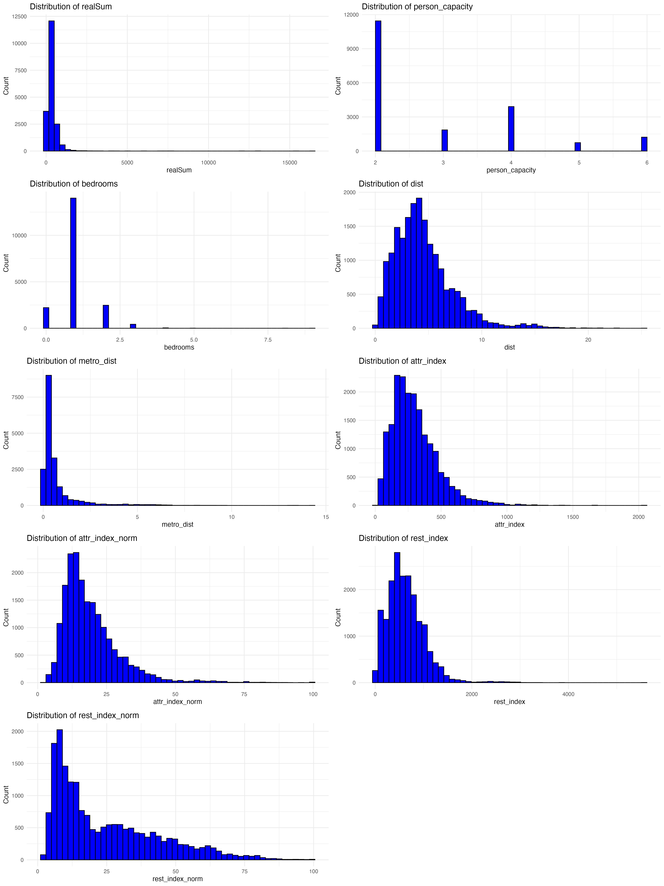
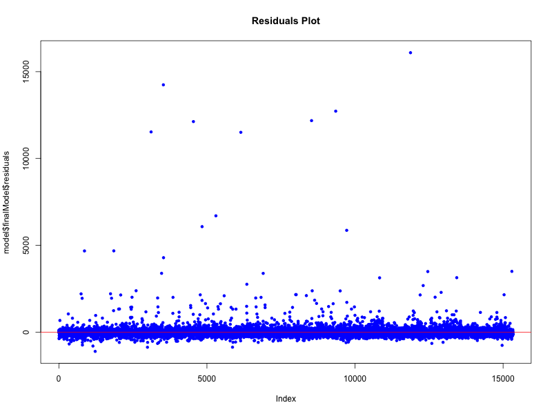

| X | realSum | room_type | room_shared | room_private | person_capacity | host_is_superhost | multi | biz | cleanliness_rating | guest_satisfaction_overall | bedrooms | dist | metro_dist | attr_index | attr_index_norm | rest_index | rest_index_norm | lng | lat | weekdays | city |
|---|---|---|---|---|---|---|---|---|---|---|---|---|---|---|---|---|---|---|---|---|---|
| 0 | 185.7998 | Private room | False | True | 2 | True | 0 | 0 | 10 | 98 | 1 | 3.5822108 | 0.1747056 | 105.06371 | 16.019042 | 148.94111 | 30.71064 | 13.42344 | 52.49150 | TRUE | berlin |
| 1 | 194.9145 | Private room | False | True | 5 | False | 0 | 1 | 9 | 86 | 1 | 3.5254103 | 0.5119218 | 75.33953 | 11.487002 | 106.44236 | 21.94768 | 13.46800 | 52.51900 | TRUE | berlin |
| 2 | 176.2176 | Private room | False | True | 2 | False | 0 | 0 | 9 | 91 | 1 | 3.8017128 | 0.2813965 | 73.66918 | 11.232324 | 105.44020 | 21.74105 | 13.47096 | 52.51527 | TRUE | berlin |
| 3 | 207.7685 | Private room | False | True | 3 | True | 0 | 0 | 10 | 97 | 1 | 0.9824082 | 0.7055731 | 133.18741 | 20.307057 | 198.23336 | 40.87436 | 13.42281 | 52.53139 | TRUE | berlin |
| 4 | 150.7432 | Private room | False | True | 2 | False | 0 | 0 | 10 | 99 | 1 | 8.8696972 | 2.1871883 | 39.86015 | 6.077469 | 50.99631 | 10.51509 | 13.52440 | 52.47842 | TRUE | berlin |
| 5 | 139.2914 | Private room | False | True | 2 | False | 1 | 0 | 8 | 87 | 1 | 3.5446646 | 0.3665525 | 103.48108 | 15.777739 | 148.45805 | 30.61103 | 13.42727 | 52.49224 | TRUE | berlin |
Analyzing Key Factors Affecting Airbnb Prices Across Berlin, London, and Paris
1 Summary
This project aims to develop a predictive model to estimate Airbnb listing prices in Berlin, London, and Paris using key property and location-based attributes. The dataset, sourced from a publicly available Airbnb repository, includes variables such as room type, guest ratings, host status, distance to city center, and neighborhood attractiveness scores. To enhance model performance, we apply exploratory data analysis (EDA), correlation analysis, and multiple linear regression to determine the most significant predictors of price. Our findings align with previous research that highlights the influence of location, property characteristics, and host reputation on pricing strategies in the short-term rental market. The evaluation of our model relies on R-squared to measure explanatory power and Root Mean Squared Error (RMSE) to assess prediction accuracy. By identifying key pricing factors, this study provides insights that can guide Airbnb hosts in optimizing their pricing strategies and travelers in making informed booking decisions.
2 Introduction
The rapid expansion of peer-to-peer accommodation platforms like Airbnb has significantly transformed the hospitality industry, enabling homeowners to monetize their properties while offering travelers diverse lodging options. Unlike hotels, Airbnb prices are highly variable, influenced by factors such as property type, host reputation, and location-specific characteristics (Guttentag 2013). Understanding the determinants of Airbnb pricing is crucial for both hosts seeking to maximize revenue and travelers looking for cost-effective stays.
Given the dynamic nature of Airbnb pricing, identifying the key factors that influence listing prices has been a focal point of research. Prior studies have investigated how aspects such as property characteristics, location, and host reputation contribute to price variations. However, price determinants may differ across cities due to unique market conditions and demand fluctuations. Thus, a more comprehensive analysis is needed to quantify these effects across different urban contexts.
This study aims to analyze the factors that influence Airbnb prices across Berlin, London, and Paris. By leveraging publicly available Airbnb listing data, we examine the role of various attributes, including room type, guest satisfaction ratings, host status, and proximity to city landmarks. Previous research has shown that location and property attributes are key drivers of pricing (Oskam and Boswijk 2015), but this study seeks to further quantify their impact using regression-based modeling.
Prior studies have also emphasized the importance of host-related attributes, such as Superhost status and guest review scores, in determining Airbnb listing prices (Teubner, Hawlitschek, and Dann 2017). A highly rated host can often command a higher price due to increased trust and perceived quality from potential guests.
Beyond host characteristics, broader market factors also influence short-term rental pricing. Research suggests that urban tourism trends and local demand-supply dynamics play a significant role in price fluctuations, particularly during peak seasons and major events, when demand surges and hosts adjust prices accordingly (Toader et al. 2020).
Given these insights, it is evident that Airbnb pricing is influenced by both micro-level attributes (e.g., host reputation and property features) and macro-level market factors (e.g., tourism trends and seasonal demand fluctuations). However, most prior studies have focused on isolated factors, such as host-related attributes or location-based pricing, without integrating multiple key determinants into a unified predictive framework.
To address this gap, this study aims to develop a comprehensive pricing prediction model that incorporates both property-specific features (e.g., room type, capacity, and cleanliness rating) and external market influences (e.g., demand fluctuations and urban attractiveness). By analyzing Airbnb listings across Berlin, London, and Paris, we seek to determine the most significant predictors of price and assess their relative impact.
Thus, our central research question is:
“What are the most significant factors that influence Airbnb listing prices in Berlin, London, and Paris?”
By identifying these key pricing determinants, this study aims to provide practical insights for Airbnb hosts optimizing their pricing strategies, travelers making cost-effective booking decisions, and market analysts studying rental price trends.
3 Dataset Description
The dataset contains 19,165 listings from Berlin, London, and Paris with variables such as room type, location, guest satisfaction, and amenities. Below is a description of the key dataset variables used in the analysis:
| Variable | Description |
|---|---|
realSum |
The price of the listing (target variable). |
room_type |
Type of accommodation (Entire home, Private room, Shared room). |
person_capacity |
Maximum occupancy. |
host_is_superhost |
Whether the host is a superhost (TRUE/FALSE). |
cleanliness_rating |
Guest cleanliness rating (scale of 1-5). |
guest_satisfaction_overall |
Overall guest rating. |
dist |
Distance to the city center (in km). |
metro_dist |
Distance to the nearest metro station (in km). |
attr_index |
Tourism attractiveness score. |
rest_index |
Restaurant quality score. |
weekdays |
Availability on weekdays (TRUE = weekday, FALSE = weekend). |
city |
The city where the listing is located (Berlin, London, Paris). |
'data.frame': 19165 obs. of 22 variables:
$ X : int 0 1 2 3 4 5 6 7 8 9 ...
$ realSum : num 186 195 176 208 151 ...
$ room_type : Factor w/ 3 levels "Entire home/apt",..: 2 2 2 2 2 2 1 2 2 1 ...
$ room_shared : chr "False" "False" "False" "False" ...
$ room_private : chr "True" "True" "True" "True" ...
$ person_capacity : num 2 5 2 3 2 2 6 2 2 3 ...
$ host_is_superhost : Factor w/ 2 levels "False","True": 2 1 1 2 1 1 2 2 2 2 ...
$ multi : int 0 0 0 0 0 1 0 0 1 1 ...
$ biz : int 0 1 0 0 0 0 0 0 0 0 ...
$ cleanliness_rating : num 10 9 9 10 10 8 10 10 10 10 ...
$ guest_satisfaction_overall: num 98 86 91 97 99 87 97 96 100 98 ...
$ bedrooms : int 1 1 1 1 1 1 2 1 1 1 ...
$ dist : num 3.582 3.525 3.802 0.982 8.87 ...
$ metro_dist : num 0.175 0.512 0.281 0.706 2.187 ...
$ attr_index : num 105.1 75.3 73.7 133.2 39.9 ...
$ attr_index_norm : num 16.02 11.49 11.23 20.31 6.08 ...
$ rest_index : num 149 106 105 198 51 ...
$ rest_index_norm : num 30.7 21.9 21.7 40.9 10.5 ...
$ lng : num 13.4 13.5 13.5 13.4 13.5 ...
$ lat : num 52.5 52.5 52.5 52.5 52.5 ...
$ weekdays : Factor w/ 2 levels "FALSE","TRUE": 2 2 2 2 2 2 2 2 2 2 ...
$ city : Factor w/ 3 levels "berlin","london",..: 1 1 1 1 1 1 1 1 1 1 ...The number of missing values is: 0 realSum person_capacity bedrooms dist
Min. : 54.33 Min. :2.000 Min. :0.000 Min. : 0.04055
1st Qu.: 183.38 1st Qu.:2.000 1st Qu.:1.000 1st Qu.: 2.58936
Median : 276.82 Median :2.000 Median :1.000 Median : 4.05918
Mean : 357.68 Mean :2.874 Mean :1.067 Mean : 4.50413
3rd Qu.: 426.40 3rd Qu.:4.000 3rd Qu.:1.000 3rd Qu.: 5.77472
Max. :16445.62 Max. :6.000 Max. :9.000 Max. :25.28456
metro_dist attr_index attr_index_norm rest_index
Min. : 0.00322 Min. : 15.15 Min. : 2.31 Min. : 19.58
1st Qu.: 0.20536 1st Qu.: 175.85 1st Qu.: 12.22 1st Qu.: 371.07
Median : 0.35334 Median : 268.30 Median : 16.52 Median : 578.02
Mean : 0.71200 Mean : 298.92 Mean : 19.24 Mean : 631.97
3rd Qu.: 0.66388 3rd Qu.: 385.82 3rd Qu.: 23.37 3rd Qu.: 831.06
Max. :14.27358 Max. :2056.55 Max. :100.00 Max. :5587.14
rest_index_norm
Min. : 2.515
1st Qu.: 9.078
Median : 17.843
Mean : 24.695
3rd Qu.: 36.447
Max. :100.000 3.1 Exploratory Data Analysis
Figure 1 displays the distribution of key predictor variables in the dataset. These histograms provide insight into how each variable is spread and whether they exhibit skewness. Most variables showing a right-skewed distribution, indicating a concentration of lower values with a few extreme outliers. The distributions of distance-based predictors (dist and metro_dist) suggest that most listings are located closer to central areas, with a gradual decline in frequency as distance increases.

3.2 Correlation Matrix of Numerical Variables
To examine potential relationships between numerical variables, we computed pairwise Pearson correlation coefficients and visualized them using a heatmap. Darker blue shades indicate strong positive correlations, while darker red shades denote strong negative correlations. We observe that realSum (our target variable) has positive correlations with person_capacity and bedrooms, implying that larger accommodations tend to have higher prices. Conversely, dist and metro_dist exhibit weak or slightly negative correlations with realSum, suggesting that properties farther from city centers may not necessarily be priced higher.
3.3 Regression Analysis
A multiple linear regression model was fitted to predict Airbnb prices using key listing attributes. Figure 3 summarizes the model coefficients, indicating the effect of each predictor on price.
Figure 4 shows the residuals of the model, which appear to be relatively evenly distributed around zero. However, some variance remains unexplained, suggesting that additional factors such as seasonal demand fluctuations or host pricing strategies could be influencing Airbnb prices.

4 Discussion
Our analysis of Airbnb listings in Berlin, London, and Paris identified several key factors that influence pricing. We found that the number of bedrooms and guest capacity are among the strongest predictors of price, with larger accommodations commanding higher rates. Additionally, location plays a significant role, as listings near metro stations tend to have higher prices due to increased accessibility. The impact of being a superhost was positive but relatively minor compared to other factors. Surprisingly, while guest satisfaction ratings contribute to pricing, they do not appear to be as influential as property size and location.
5 Key Findings
5.1 Strongest Predictors of Price
Person Capacity (+48.29 per additional person): Listings accommodating more guests tend to be more expensive.
Bedrooms (+143.87 per additional bedroom): More bedrooms significantly increase the price.
Tourism Attraction Index (+8.86 per unit increase): Higher attraction index leads to higher prices, confirming that locations with popular tourist attractions are more expensive.
5.2 Location-Based Effects
Distance from the City Center (+9.73 per km): Surprisingly, prices increase slightly as the distance from the city center grows. This suggests that some high-end properties exist further from the city core, possibly in suburban or scenic locations.
Distance from Metro (-19.50 per km): Listings farther from metro stations are cheaper, showing that metro accessibility is a key pricing factor.
5.3 Effect of Host & Room Type
Superhost Status (+25.78 for superhosts): Superhosts charge slightly higher prices, likely due to better reviews and perceived trustworthiness.
5.4 Room Type
Private Rooms (-145.59): Private rooms are significantly cheaper than entire homes.
Shared Rooms (-249.30): The cheapest option, with prices much lower than entire homes.
5.5 City-Based Price Differences
Paris (+86.64 compared to Berlin) and London(+75.57 compared to Berlin) are significantly more expensive.
The results confirm that Paris has the highest Airbnb prices, followed by London, while Berlin is the most affordable.
Weekdays vs. Weekends:
No significant difference (p = 0.654).
Prices remain stable between weekdays and weekends, indicating consistent demand rather than peak pricing strategies.
6 Expected vs. Unexpected Results
6.1 Expected
Person capacity, bedrooms, and attraction index significantly influence price, as anticipated.
Superhosts charge higher prices, likely due to trust and better service.
Room type heavily affects pricing, with entire homes being the most expensive.
6.2 Unexpected
City center distance shows a positive relationship with price (instead of negative). This could mean luxury properties exist in suburban areas, or city centers have budget accommodations.
Weekday vs. weekend pricing is not significantly different. We expected weekend prices to be slightly higher, but the data suggests a steady demand throughout the week.
7 Model Performance & Validity
7.1 R-Squared
The model has R-squared of 0.24(with Adjusted R-squared of 0.2395), meaning that the model explains 24% of Airbnb price variation, meaning other factors like seasonal trends, demand fluctuations, or special events might also influence pricing.
7.2 Variance Inflation Factor (VIF) Checks
rest_index_norm (GVIF = 5.64) is the highest, meaning it might have moderate collinearity with other features.
dist (GVIF = 3.64) and city (GVIF = 5.38) are also relatively high.
While no extreme multicollinearity exists, some correlation between location-related variables could affect estimates.
8 Impact & Future Research
8.1 Business Impact
Understanding these pricing factors can provide good insights for property owners and hosts looking to optimize their listings:
Property owners should focus on increasing guest capacity and bedrooms to maximize revenue.
Listings near metro stations can charge higher prices due to increased accessibility.
While being a superhost slightly boosts prices, it’s not a major pricing factor.
8.2 Consumer Insights
These results also provide valuable insights for consumers, helping them make more informed decisions when booking Airbnbs:
Consumers can use these findings to assess whether a listing’s price is reasonable based on key factors like location, room size, and amenities, avoiding overpriced listings.
They may adjust their booking strategies, such as selecting less central locations with good transit access, to get better deals while still maintaining convenience.
8.3 Future Research Directions
While this analysis provides valuable insights into Airbnb pricing, several areas warrant further investigation to refine and expand upon these findings.
A. Enhancing Model Performance
The current model explains only a portion of the variation in listing prices. Future studies could explore more advanced modeling techniques, such as non-linear regression methods, tree-based models, or ensemble approaches, to improve predictive accuracy.
Incorporating additional features, such as review sentiment scores, booking frequency, or cancellation policies, may also enhance the model’s ability to capture key pricing drivers.
B. Exploring Seasonal and Event-Based Price Variations
Seasonal trends, such as holiday periods and peak travel seasons, likely influence short-term rental prices. Analyzing how pricing fluctuates throughout the year could offer a deeper understanding of demand-driven adjustments.
Major events, including conferences, festivals, and sporting events, may create short-term price surges. Examining the extent of these effects across different cities could provide valuable insights for both hosts and policymakers.
C. Assessing Neighborhood-Level Demand Patterns
Price variations are often shaped by local factors, such as proximity to tourist attractions, business districts, or public transportation hubs. A more granular spatial analysis could help identify high-demand areas and their characteristics.
Studying shifts in neighborhood popularity over time may also reveal emerging trends in the short-term rental market.
D. Understanding the Impact of Policy and Economic Conditions
Government regulations on short-term rentals, such as caps on rental days or stricter licensing requirements, may have significant implications for pricing and market dynamics. Investigating policy interventions across different regions could shed light on their long-term effects.
Broader economic factors, including inflation rates, tourism activity, and local cost of living, may also play a role in shaping Airbnb pricing strategies. Future research could examine how these external influences interact with host-driven pricing decisions.
E. Comparing Consumer Preferences Across Markets
Pricing strategies are often influenced by guest expectations and booking behaviors. A deeper analysis of guest reviews, satisfaction ratings, and preferred amenities across cities may provide insights into how consumer preferences shape listing prices.
Understanding why Paris consistently commands higher prices than Berlin or London could reveal cultural or market-driven differences that extend beyond property attributes alone.
9 References
Guttentag, Daniel. 2013. “Airbnb: Disruptive Innovation and the Rise of an Informal Tourism Accommodation Sector.” https://www.researchgate.net/publication/271624904_Airbnb_Disruptive_innovation_and_the_rise_of_an_informal_tourism_accommodation_sector.
Oskam, Jeroen, and Albert Boswijk. 2015. “Airbnb: The Future of Networked Hospitality Businesses.” https://www.researchgate.net/publication/298305479_Airbnb_The_future_of_networked_hospitality_businesses.
Teubner, Timm, Florian Hawlitschek, and David Dann. 2017. “Price Determinants on Airbnb: How Reputation Pays Off in the Sharing Economy.” https://www.researchgate.net/publication/315838775_Price_Determinants_on_Airbnb_How_Reputation_Pays_Off_in_the_Sharing_Economy.
Toader, Valentin, Adina Letiţia Negrușa, Oana Ruxandra Bode, and Rozalia Veronica Rus. 2020. “Analysis of Price Determinants in the Case of Airbnb Listings.” https://www.tandfonline.com/doi/full/10.1080/1331677X.2021.1962380.